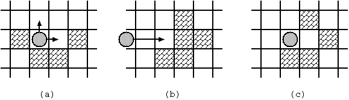

Home Page
F.A.Qs
Statistical Charts
Past Contests
Scheduled Contests
Award Contest
| Online Judge | Problem Set | Authors | Online Contests | User | ||||||
|---|---|---|---|---|---|---|---|---|---|---|
| Web Board Home Page F.A.Qs Statistical Charts | Current Contest Past Contests Scheduled Contests Award Contest | |||||||||
|
Language: Curling 2.0
Description On Planet MM-21, after their Olympic games this year, curling is getting popular. But the rules are somewhat different from ours. The game is played on an ice game board on which a square mesh is marked. They use only a single stone. The purpose of the game is to lead the stone from the start to the goal with the minimum number of moves. Fig. 1 shows an example of a game board. Some squares may be occupied with blocks. There are two special squares namely the start and the goal, which are not occupied with blocks. (These two squares are distinct.) Once the stone begins to move, it will proceed until it hits a block. In order to bring the stone to the goal, you may have to stop the stone by hitting it against a block, and throw again.
The movement of the stone obeys the following rules:
 Under the rules, we would like to know whether the stone at the start can reach the goal and, if yes, the minimum number of moves required. With the initial configuration shown in Fig. 1, 4 moves are required to bring the stone from the start to the goal. The route is shown in Fig. 3(a). Notice when the stone reaches the goal, the board configuration has changed as in Fig. 3(b).
Input The input is a sequence of datasets. The end of the input is indicated by a line containing two zeros separated by a space. The number of datasets never exceeds 100. Each dataset is formatted as follows.
The width and the height of the board satisfy: 2 <= w <= 20, 1 <= h <= 20. Each line consists of w decimal numbers delimited by a space. The number describes the status of the corresponding square.
The dataset for Fig. D-1 is as follows:
Output For each dataset, print a line having a decimal integer indicating the minimum number of moves along a route from the start to the goal. If there are no such routes, print -1 instead. Each line should not have any character other than this number. Sample Input 2 1 3 2 6 6 1 0 0 2 1 0 1 1 0 0 0 0 0 0 0 0 0 3 0 0 0 0 0 0 1 0 0 0 0 1 0 1 1 1 1 1 6 1 1 1 2 1 1 3 6 1 1 0 2 1 1 3 12 1 2 0 1 1 1 1 1 1 1 1 1 3 13 1 2 0 1 1 1 1 1 1 1 1 1 1 3 0 0 Sample Output 1 4 -1 4 10 -1 Source |
[Submit] [Go Back] [Status] [Discuss]
All Rights Reserved 2003-2013 Ying Fuchen,Xu Pengcheng,Xie Di
Any problem, Please Contact Administrator